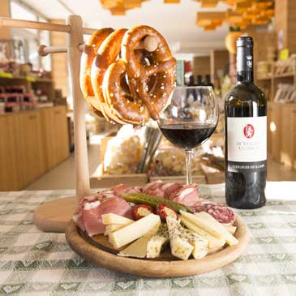

Gastronomia e cantina
Il meglio della gastronomia trentina e una cantina con i migliori vini e grappe del territorio.
Tuffatevi nei veri sapori del Trentino
Sugli scaffali del nostro negozio potrete trovare il meglio della gastronomia trentina, a partire dai formaggi tipici dei nostri alpeggi come il Casolet a latte crudo della Val di Sole, presidio Slow Food, il formaggio stagionato nel fieno o il formaggio al Teroldego e spezie.
Rimanendo nei gusti trentini, come non parlare delle nostre farine di polenta macinata a pietra, anche impreziosite con aromi, dei funghi secchi o sott'olio, degli inconfondibili sughi di cervo o lepre con cui accompagnare un buon piatto di polenta o di tagliatelle. Ultimi, ma non certo per bontà, da Toffenetti potrete scegliere anche tra la nostra selezione di canederli.
Visita lo shop online




Promozione trasporto gratis!
Per i tuoi acquisti online superiori a € 95 con pagamento tramite bonifico bancario le spese di spedizione sono GRATIS.*
* Il peso del materiale ordinato non deve superare i 75 kg e l'indirizzo di consegna deve essere in Italia. Oltre i 75 kg le spese sono calcolate in base al peso e comunicate via email.